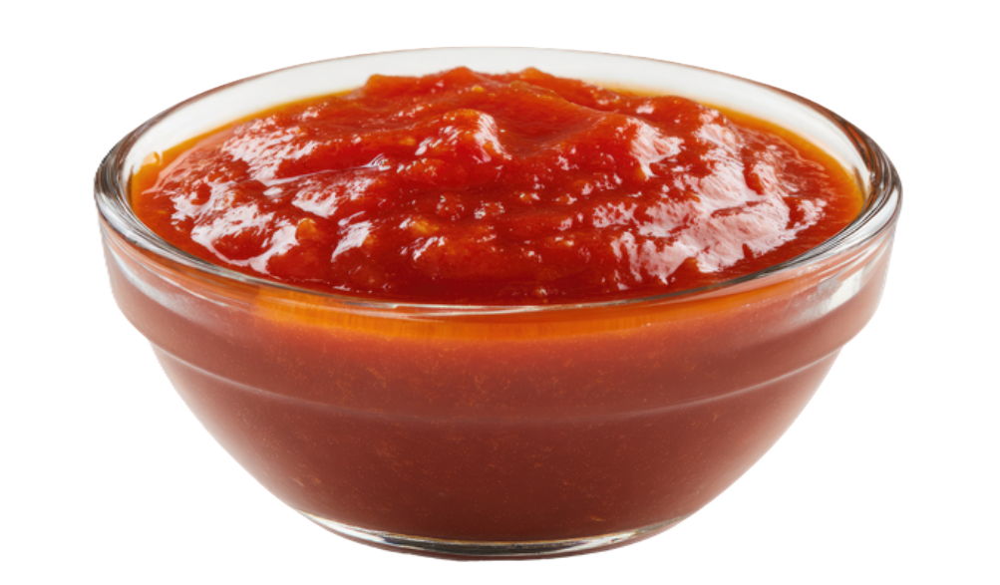
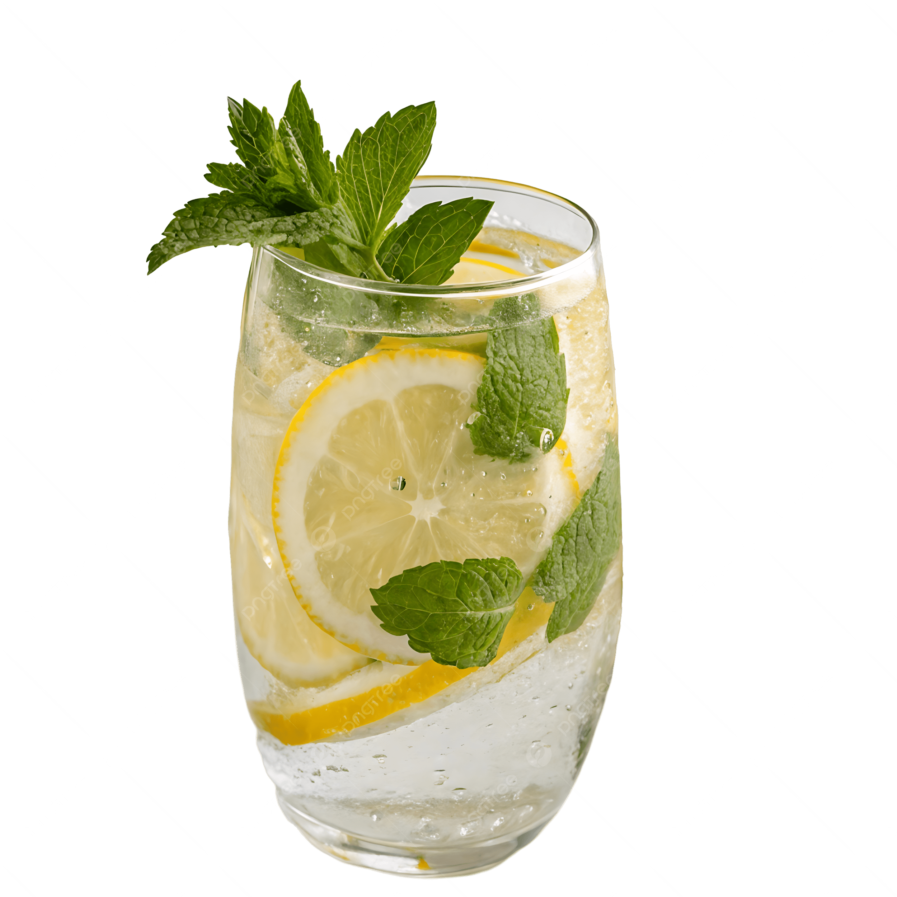

Coloque os alimentos consumidos nas suas refeições e analisaremos seu consumo de ultraprocessados

Análise de nutrientes

Relatório alimentar

Alerta de ultraprocessados
Sugestões de receitas
Alimentos ultraprocessados são formulações industriais feitas, em sua maioria ou na totalidade, de substâncias extraídas de alimentos (óleos, gorduras, açúcar, proteínas), derivadas de constituintes de alimentos (gorduras hidrogenadas, amido modificado) ou sintetizadas em laboratório com base em matérias orgânicas como carvão e petróleo (corantes, aromatizantes, realçadores de sabor)
Alimentos saudáveis são aqueles que fornecem ao corpo os nutrientes necessários para funcionar bem como vitaminas, minerais, proteínas, gorduras boas e carboidratos de qualidade, sem excesso de substâncias prejudiciais, como açúcar, sal e gorduras ruins.

Molho de tomate caseiro é uma opção saudável e saborosa, feito com ingredientes frescos e sem conservantes, ideal para massas e pizzas.
Batatas chips saudáveis, como as assadas ou feitas na air fryer, possuem menos gordura e calorias que as fritas tradicionais.

Água com limão e gás é simples, mas tem alguns benefícios interessantes — principalmente como alternativa saudável a refrigerantes.

Biscoitos de aveia saudáveis são ricos em fibras, ajudando na digestão e proporcionando sensação de saciedade. É excelente para o controle do colesterol e açúcar no sangue.